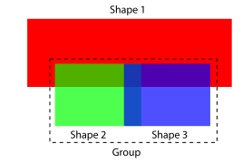
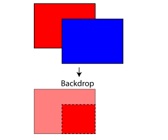
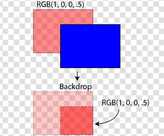
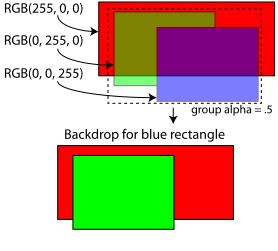
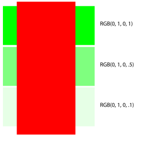
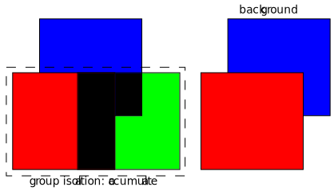
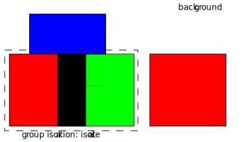
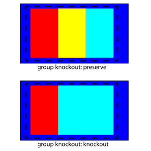

Compositing and Blending 1.0
18 April 2012
- Editors:
- Rik Cabanier, Adobe Systems, cabanier@adobe.com
- Nikos Andronikos,
Canon Information Systems Research Australia, Nikos.Andronikos@cisra.canon.com.au
- Authors:
- The authors of this specification are the participants of the W3C
CSS and SVG Working Groups.
Copyright © 2012 W3C® (MIT, ERCIM,
Keio), All Rights Reserved. W3C liability,
trademark
and document
use rules apply.
Abstract
Compositing describes how shapes of different elements are combined
into a single image. Conceptually, each element is rendered into its own
buffer and is then merged with its backdrop. The
most widely used compositing operation is simple alpha compositing. (see
Simple
Alpha Compositing) This spec will introduce additional compositing
operators that will enable advanced graphical effects.
Blending describes how colors are "blended" together. Typically, the
color of an element and the color of its backdrop
are combined to create a new color. This new color replaces the old color
and is then composited with the backdrop using the
specified compositing mode.
Status of This Document
This section describes the status of this document at the time of
its publication. Other documents may supersede this document. A list of
current W3C publications and the latest revision of this technical report
can be found in the W3C technical reports
index at http://www.w3.org/TR/.
This document is the first public working draft of this specification.
Publication as a Working Draft does not imply endorsement by the W3C
Membership. This is a draft document and may be updated, replaced or
obsoleted by other documents at any time. It is inappropriate to cite this
document as other than work in progress.
The (archived) public
mailing list public-fx@w3.org (see
instructions) is preferred
for discussion of this specification. When sending e-mail, please put the
text “Compositing” in the subject, preferably like this:
“[Compositing] …summary of comment…”
This document was produced by the CSS Working Group (part of
the Style Activity) and the SVG Working Group (part of the
Graphics Activity)
This document was produced by groups operating under the 5 February
2004 W3C Patent Policy. W3C maintains a public list of any
patent disclosures (CSS) and a public list of any
patent disclosures (SVG) made in connection with the deliverables of
each group; these pages also include instructions for disclosing a patent.
An individual who has actual knowledge of a patent which the individual
believes contains Essential
Claim(s) must disclose the information in accordance with section
6 of the W3C Patent Policy.
The list of changes made to this specification is
available.
Table of contents
1. Introduction
At the basic level, compositing describes how shapes interact while
blending describes how colors interact. Both idioms use a rendered version
of the current element (ie a shape or a group) and mix it with the backdrop.
This document will describe the algorithms of compositing and blending
in the first part. This part is not written for a particular
model; instead it provides a generic model for blending and
compositing.
The second part describes how they are specified in CSS.
The keywords in thedefinition section will most likely
transition to their respective specifications.
2. What is compositing
Compositing is the process by which graphical objects are combined.
Alpha compositing uses the alpha values, or channel (bit mask) to
represent the coverage of each pixel. The alpha channel is often said to
represent the opacity. This coverage information is used to control the
compositing of colors.
Simple alpha compositing, like that found by default in SVG 1.1 and in
GDI+ and many other graphics engines, composites each object onto the backdrop image using a simplistic formula that has
the effect of overlaying the object over the backdrop. Where the objects overlap and coverage is
not complete the color of the backdrop may show
through the object that has just been rendered.
2.1. simple alpha
blending
In computer graphics, alpha compositing is the process of combining an
image with a backdrop to create the appearance of
partial or full transparency. The alpha value is stored alongside the
color and has a value between 0 and 1. A value of 0 means that the pixel
does not have any coverage information and is transparent; i.e. there was
no color contribution from any geometry because the geometry did not
overlap this pixel. A value of 1 means that the pixel is opaque because
the geometry completely overlapped the pixel.
A shape's contribution to a composition is described by the
multiplication of its color (Ca) and its alpha (αa). This is also called
the premultiplied alpha value. We will call this the "pixel"
from here on.
ca = Ca x αa
with
ca: the pixel value
Ca: the color value
αa: the alpha value
Conceptually, "alpha" means "allow (1 - alpha) from behind to show".
With this in mind, we can easily determine the pixel after
compositing.
Take the foreground pixel and add (1 - alpha) of the backdrop pixel. Thus, the formula becomes:
co = ca + cb x (1 - αa)
with
co: the pixel after compositing
ca: the pixel of the shape
cb: the pixel of the backdrop
αa: the alpha value of the shape

Figure 1
There are circumstances that we have to know the alpha value of the
pixel. For example in figure 1, shape 2 and 3 have opacity. They are
composited together because they are in a group.
This group is then composited on top of shape1. Note how the alpha of
shape 2 and 3 is still in effect and is letting the shape 1 shine through.
Without knowing αa of the group, we would not be able to calculate
this.
Luckily, the alpha value is determined the same way as the pixel
value:
take the alpha of the shape and add (1-alpha) of the backdrop. So:
αo = αa + αb x (1 - αa)
with
αo: the alpha after compositing
αa: the alpha of the shape
αb: the alpha of the backdrop
If you want to know the color of a shape and not just its pixel value,
you can reverse the formula for premultiplied alpha:
Co = co / αo
By replacing co with the simple alpha compositing formula, you can
directly use the color values that the user specified:
Co = 1/αo x (Ca x αa + Cb x αb x (1 - αa))
with
αo: the alpha after compositing
Co: the color after compositing
Ca: the color of the shape
Cb: the color of the backdrop
αa: the alpha of the shape
αb: the alpha of the backdrop
2.2. Examples
of simple alpha blending
Next we will run through a couple of scenarios that show how alpha
compositing works.
Figure 1
Figure 1 describes the most basic case. It consists of 1 shape that is
filled with a solid color so no compositing operation is required.

Figure 2
Figure 2 is a more complex example. There is still no alpha but there
are 2 shapes that intersect each other.
Applying the compositing value, you get:
αo = 1 + 1 x (1 - 1) = 1
co = RGB(0, 0, 255) x 1 + RGB(255, 0, 0) x 1 x (1 - 1)
co = RGB(0, 0, 255)
Co = 1/1 * RGB(0, 0, 255) = RGB(0, 0, 255)

Figure 3
Figure 3 is an example where the shape has alpha but the backdrop is opaque.
Applying the compositing value, you get:
αo = .5 + 1 x (1 - .5) = 1
co = RGB(0, 0, 255) * .5 + RGB(255, 0, 0) * 1 * (1 - .5)
co = RGB(0, 0, 127) + RGB(127, 0, 0)
co = RGB(127, 0, 127)
Co = 1/1 * RGB(127, 0, 127) = RGB(127, 0, 127)

Figure 4
Figure 4 is an example where both the shape and the backdrop have alpha.
Applying the compositing value, you get:
αo = .5 + .5 x (1 - .5) = .75
co = RGB(0, 0, 255) * .5 + RGB(255, 0, 0) * .5 * (1 - .5)
co = RGB(0, 0, 127) + RGB(127, 0, 0)
co = RGB(63, 0, 127)
Co = 1/.75 * RGB(63, 0, 127) = RGB(84, 0, 169)
2.3. Group invariance
An important behavior of simple alpha compositing is its group
invariance. Adding or removing grouping with default attributes should not
show visual differences.
so: a + b + c = a + (b + c) = (a + b)+c
When adding attributes to the group such as knockout, isolate, blending or
Port-Duff compositing, groups are no longer be invariant.
2.4. Group alpha and blending
Conceptually each group creates a new context. The content of a group
is calculated first followed by blending and compositing. If there is
alpha on the group, it is multipied with the alpha value of the group's
content.
The elements within a group are always processed before the group. This
means that alpha, blending and compositing on the group always happens
after the group's content is calculated.
2.5. Matting
The end result of alpha compositing can contain alpha. For instance, a
solid red shape with an opacity value of 50% will end up with a RGB(255,
0, 0, .5) color. Since monitors and printers can't display opacity, we
have to remove this alpha value by compositing it with solid white. This
process is called matting.
Applying the compositing formula, you get:
co = RGB(0, 0, 255) * .5 + RGB(255, 255, 255) * 1 * (1 - .5)
co = RGB(0, 0, 127) + RGB(127, 127, 127)
co = RGB(127, 127, 255)
which is the value that is sent to the monitor.
3. Backdrop calculation
The backdrop is the content that is behind the element.
Until now, we haven't discussed how it is calculated. A first
assumption would be that it consists of everything that was drawn earlier
and this turns out to be correct.
If you think it through a little more, it seems that there would be a
complication if parent groups have opacity, non-default blending or
non-default compositing modes
However, since these operators are applied after the group contents are
calculated, it turns out that they can be ignored when calculating the
backdrop. So, for an element that is a member of a group that has opacity,
the opacity should be ignored when calculating the backdrop.
3.1. Examples of backdrop
calculation

Figure 5
Figure 5 has 2 simple shapes. The backdrop for the blue shape is the
bottom right corner of the red shape. The dotted line shows the area that
is examined during compositing of the blue shape.

Figure 6
In figure 6, the shape in the backdrop has an alpha value. The alpha
value of the backdrop shape is preserved when the backdrop is calculated.

Figure 7
In figure 7, the blue and green shapes are in a group that has alpha.
When calculating the backdrop for the blue shape, the red and green
shapes are combined with simple alpha compositing and the group alpha is
ignored. If the group had blending, compositing or filtering, those would
also be ignored.
3.2. Establishing a new
backdrop context
Under certain circumstances, you might want to limit the backdrop
calculation up to a certain parent group. For example, if you import
artwork, you usually don't want its contents to blend with the backdrop of
the page you are integrating because it will change the look. In other
words, you want to ‘isolate’ the
compositing and blending of that artwork from the rest of the tree.
Compositing and blending each have an attribute (or the
same attribute) that can be set on the group where you want this to
happen.
See the sections on compositing and blending on how this affects
rendering.
4. Advanced compositing
features
NOT FINISHED. Work in progress.
While the advanced blending modes are concerned with the colour of the
final pixel, Porter Duff blending is largely concerned with determining
where the contribution for the colour comes from. Porter Duff compositing
is based on a model of a pixel in which two shapes (source and
destination) may contribute to the final colour of the pixel. The pixel is
divided into 4 sub-pixel regions and each region represents a possible
combination of source and destination.
The four regions are:
• Source Only – Where only the source contributes to the pixel
colour
• Destination only – where only the destination contributes to the
pixel colour
• Both - Source and Destination – where both the source and
destination may combine to define the pixel colour
• None - No source or Destination – where neither make a contribution
to the final pixel colour
The contribution from each region to the final pixel colour is defined by
the coverage of the shape at that pixel, and the operator in use. Coverage
is specified in terms of alpha. Full alpha (1) implies full coverage,
while zero alpha implies no coverage. This means that the area of each
region within the sub-pixel is dependent on the coverage of each shape
contributing to the pixel. The area of each region can be calculated with
the following equations:
| Both
| alpha_a x alpha_b
|
| Source only
| alpha_a(1 – alpha_b)
|
| Destination only
| alpha_b(1 – alpha_a)
|
| None
| (1 – alpha_a)(1 – alpha_b)
|
The image in Figure [X] above represents coverage of 0.5 for both source
and destination.
Both = 0.5 x 0.5 = 0.25
Source Only = 0.5 (1 – 0.5) = 0.25
Destination Only = 0.5(1 – 0.5) = 0.25
None = (1 – 0.5)(1 – 0.5) = 0.25
Therefore, the area of each region is 25% in this example.
4.1. The
porter-duff blending modes
The landmark 1984 paper [3] by Thomas Porter and Tom Duff, who worked
for Lucasfilm, defined the algebra of compositing and developed the twelve
"Porter Duff" operators. These operators control the results of mixing the
four sub-pixel regions formed by the overlapping of graphical objects that
have an alpha or pixel coverage channel/value. The operators use all
practical combinations of the four regions.
There are 12 basic Porter Duff operators, satisfying all possible
combinations of source and destination.
[INSERT PICTURE OF GEOMETRIC COVERAGE OF EACH
OPERATOR]
From the geometric representation of each operator, the contribution of
each shape can be seen to be expressed as a fraction of the total coverage
of the output. For example, in source over, the possible contribution of
source is full (1) and the possible contribution of destination is
whatever is remaining (1 – alpha_a). This is modified by the coverage of
source and destination to give the equation for the final coverage of the
pixel:
alpha_o = alpha_a x 1 + alpha_b x (1 – alpha_a)
The fractional terms Fa (1 in this example) and Fb (1 – alpha_a in
this example) are defined for each operator and specify the fraction of
the shapes that may contribute to the final pixel value. The general form
of the equation for coverage is:
alpha_a x Fa + alpha_b x Fb
and incorporating colour gives the general Porter Duff equation
co = alpha_a x Fa x Ca + alpha_b x Fb x Cb
Where: co is the output colour pre-multiplied with the output alpha [0
<= co <= 1] alpha_a is the coverage of the source Fa is defined by the
operator and controls inclusion of the source Ca is the colour of the
source (not multiplied by alpha) alpha_b is the coverage of the dest Fb is
defined by the operator and controls inclusion of the dest Cb is the
colour of the dest (not multiplied by alpha) [BREAK THIS
IMAGE UP AND SHOW EACH IN THEIR RESPECTIVE SECTIONS]
4.1.1.
Clear
No regions are enabled.
Fa = 0 Fb = 0
co = 0 alpha_o = 0
4.1.2.
Source
Only the source will be present.
Fa = 1 Fb = 0
co = alpha_a x Ca alpha_o = alpha_a
4.1.3. Dest
Only the dest will be present.
Fa = 0 Fb = 1
co = alpha_b x Cb alpha_o = alpha_b
4.1.4.
Source Over
Source is placed over the dest
Fa = 1 Fb = 1 – alpha_a
co = alpha_a x Ca + alpha_b x Cb x (1 – alpha_a) alpha_o = alpha_a + alpha_b x (1 – alpha_a)
4.1.5. Dest
Over
Dest is placed over the source.
Fa = 1 – alpha_b Fb = 1
co = alpha_a x Ca x (1 – alpha_b) + alpha_b x Cb alpha_o = alpha_a x (1 – alpha_b) + alpha_b
4.1.6.
Source In
The source that overlaps the destination, replaces the destination.
Fa = alpha_b Fb = 0
co = alpha_a x Ca x alpha_b alpha_o = alpha_a x alpha_b
4.1.7. Dest
In
Destination which overlaps the source, replaces the source.
Fa = 0 Fb = alpha_a
co = alpha_b x Cb x alpha_a alpha_o = alpha_b x alpha_a
4.1.8.
Source Out
Source is placed, where it falls outside of the destination.
Fa = 1 – alpha_b Fb = 0
co = alpha_a x Ca x (1 – alpha_b) alpha_o = alpha_a x (1 – alpha_b)
4.1.9. Dest
Out
Destination is placed, where it falls outside of the source.
Fa = 0 Fb = 1 – alpha_a
co = alpha_b x Cb x (1 – alpha_a) alpha_o = alpha_b x (1 – alpha_a)
4.1.10. Src
Atop
Source which overlaps the destination, replaces the destination.
Destination is placed elsewhere.
Fa = alpha_b Fb = 1 – alpha_a
co = alpha_a x Ca x alpha_b + alpha_b x Cb x (1 – alpha_a) alpha_o = alpha_a x alpha_b + alpha_b x (1 – alpha_a)
4.1.11.
Dest Atop
Dest which overlaps the source replaces the source. Source is placed
elsewhere.
Fa = 1 - alpha_b Fb = alpha_a
co = alpha_a x Ca x (1 - alpha_b) + alpha_b x Cb x alpha_a alpha_o = alpha_a x (1 - alpha_b) + alpha_b x alpha_a
4.1.12. XOR
The non-overlapping regions of source and destination are combined.
Fa = 1 - alpha_b Fb = 1 – alpha_a
co = alpha_a x Ca x (1 - alpha_b) + alpha_b x Cb x (1 – alpha_a) alpha_o = alpha_a x (1 - alpha_b) + alpha_b x (1 – alpha_a)
4.1.13.
Plus
Plus is an additional operator that is defined in the Porter-Duff paper
[REFERENCE].
Fa = 1 Fb = 1
co = alpha_a x Ca + alpha_b x Cb alpha_o = alpha_a + alpha_b
4.2. Group compositing
behavior with Porter Duff modes
TODO.
4.2.1. Isolated
groups and Porter Duff modes
TODO.
4.2.2. Knockout
groups and Porter Duff modes
TODO.
4.2.3. Clip to
self behavior
TODO.
5. Blending
Blending takes the colors of the source element and mixes them with the
backdrop. The resulting blended element then
replaces the original source. Note that the opacity of the source element
is ignored during blending. The alpha of the backdrop will also be ignored. Note that this
calculation always happens in non-premultiplied space.
We will describe the "mixing" formula as:
Cm = B(Cb, Cs)
with:
Cm: the result color after blending
B: the formula that does the blending
Cb: the backdrop color
Cs: the source color
If the result of the mixing formula falls outside of the color range, it
will be clamped to minimum or maximum value of the color range.
However, we can not use this value since this calculation is
overlooking the alpha of the backdrop. If the backdrop is not opaque, the result of the blend
function should be mixed with the original color of the source element.
The value of the new color now becomes:
Cr = (1 - αb) x Cs + αb x B(Cb, Cs)
with:
Cr: the result color
B: the formula that does the blending
Cs: the source color
Cb: the backdrop color
αb: the backdrop alpha

This example has a red rectangle with a blending mode that is placed
on top of a set of green rectangles that have different levels of
opacity.
Note how the top rectangle shifts more toward red as the opacity of the
backdrop lowers.
This formula creates a new image which is then composited with the
specified Porter-Duff compositing formula. For simple alpha blending, the
formula thus becomes:
simple alpha blending:
co = ca + cb x (1 - αa)
written as non-premultiplied:
αo x Co = αa x Ca + (1 - αa) x αb x Cb
now subsitute the result of blending for Ca:
αo x Co = αa x ((1 - αb) x Cs + αb x B(Cb, Cs)) + (1 - αa) x αb x Cb
= αa x (1 - αb) x Cs + αa x αb x B(Cb, Cs) + (1 - αa) x αb x Cb
For simplicity, all the examples in this chapter have ‘src-over’ compositing applied to them.
5.1. Separable blend
modes
A blend mode is termed separable if each component of the result color
is completely determined by the corresponding components of the
constituent backdrop and source colors—that is,
if the mixing formula is applied separately to each set
of corresponding components.
Each of the following blend modes will apply the blending function
B(Cb, Cs) on each of the color components.
5.1.1. ‘normal’ blend mode
This is the default attribute which specifies no blending. The blending
formula simply select the source color.
B(Cb, Cs) = Cs

5.1.2. ‘multiply’ blend mode
The source color is multiplied by the destination color and replaces
the destination.
The resultant color is always at least as dark as either the source or
destination color. Multiplying any color with black results in black.
Multiplying any color with white preserves the original color.
B(Cb, Cs) = Cb x Cs

5.1.3. ‘screen’ blend mode
Multiplies the complements of the backdrop and
source color values, then complements the result.
The result color is always at least as light as either of the two
constituent colors. Screening any color with white produces white;
screening with black leaves the original color unchanged. The effect is
similar to projecting multiple photographic slides simultaneously onto a
single screen.
B(Cb, Cs) = 1 - [(1 - Cb) x (1 - Cs)]
= Cb + Cs -(Cb x Cs)

5.1.4. ‘overlay’ blend mode
Multiplies or screens the colors, depending on the backdrop color value.
Source colors overlay the backdrop while
preserving its highlights and shadows. The backdrop color is not replaced but is mixed with the
source color to reflect the lightness or darkness of the backdrop.
B(Cb, Cs) = HardLight(Cs, Cb)
Overlay is the inverse of the ‘hardlight’ blend mode. See the definition of
‘hardlight’ for the formula.

5.1.5. ‘darken’ blend mode
Selects the darker of the backdrop and source
colors.
The backdrop is replaced with the source where
the source is darker; otherwise, it is left unchanged.
B(Cb, Cs) = min(Cb, Cs)

5.1.6. ‘lighten’ blend mode
Selects the lighter of the backdrop and source
colors.
The backdrop is replaced with the source where
the source is lighter; otherwise, it is left unchanged.
B(Cb, Cs) = max(Cb, Cs)

5.1.7. ‘color-dodge’ blend mode
Brightens the backdrop color to reflect the
source color. Painting with black produces no changes.
if(Cs < 1)
B(Cb, Cs) = min(1, Cb / (1 - Cs))
else
B(Cb, Cs) = 1

5.1.8. ‘color-burn’ blend mode
Darkens the backdrop color to reflect the
source color. Painting with white produces no change.
if(Cs > 0)
B(Cb, Cs) = 1 - min(1, (1 - Cb) / Cs)
else
B(Cb, Cs) = 0

5.1.9. ‘hard-light’ blend mode
Multiplies or screens the colors, depending on the source color value.
The effect is similar to shining a harsh spotlight on the backdrop.
if(Cs <= 0.5)
B(Cb, Cs) = Multiply(Cb, 2 x Cs)
else
B(Cb, Cs) = Screen(Cb, 2 x Cs -1)
See the definition of ‘multiply’
and ‘screen’ for their formulas.

5.1.10. ‘soft-light’ blend mode
Darkens or lightens the colors, depending on the source color value.
The effect is similar to shining a diffused spotlight on the backdrop
if(Cs <= 0.5)
B(Cb, Cs) = Cb - (1 - 2 x Cs) x Cb x (1 - Cb)
else
B(Cb, Cs) = Cb + (2 x Cs - 1) x (D(Cb) - Cb)
with
if(Cb <= 0.25)
D(Cb) = ((16 * Cb - 12) x Cb + 4) x Cb
else
D(Cb) = sqrt(Cb)

5.1.11. ‘difference’ blend mode
Subtracts the darker of the two constituent colors from the lighter
color.
Painting with white inverts the backdrop color;
painting with black produces no change.
B(Cb, Cs) = | Cb - Cs |

5.1.12. ‘exclusion’ blend mode
Produces an effect similar to that of the Difference mode but lower in
contrast. Painting with white inverts the backdrop
color; painting with black produces no change
B(Cb, Cs) = Cb + Cs - 2 x Cb x Cs

5.2. Non-separable
blend modes
Nonseparable blend modes consider all color components in combination
as opposed to the seperable ones that look at each component
individually.
All of these blend modes conceptually entail the following steps:
a) Convert the backdrop and source colors from the
blending color space to an intermediate HSL (hue-saturation-luminosity)
representation.
b) Create a new color from some combination of hue, saturation, and
luminosity components selected from the backdrop
and source colors.
c) Convert the result back to the original color space.
The nonseparable blend mode formulas make use of several auxiliary
functions:
Lum(C) = 0.3 x Cred + 0.59 x Cgreen + 0.11 x Cblue
ClipColor(C)
L = Lum(C)
n = min(Cred, Cgreen, Cblue)
x = max(Cred, Cgreen, Cblue)
if(n < 0)
C = L + (((C - L) * L) / (L - n))
if(x > 1)
C = l + (((Cred - L) * (1 - L) / (x - L))
SetLum(C, l)
d = l - Lum(C)
Cred = Cred + d
Cgreen = Cgreen + d
Cblue = Cblue + d
return ClipColor(C)
The subscripts min, mid, and max in the next function refer to the color
components having the minimum, middle, and maximum values upon entry to the function.
SetSat(C, s)
if(Cmax > Cmin)
Cmid = (((Cmid - Cmin) x s) / (Cmax - Cmin))
Cmax = s
else
Cmid = Cmax = 0
Cmin = 0
return C;
5.2.1. ‘hue’ blend mode
Creates a color with the hue of the source color and the saturation and
luminosity of the backdrop color.
B(Cb, Cs) = SetLum(SetSat(Cs, Sat(Cb)), Lum(Cb))

5.2.2. ‘saturation’ blend mode
Creates a color with the saturation of the source color and the hue and
luminosity of the backdrop color. Painting with
this mode in an area of the backdrop that is a
pure gray (no saturation) produces no change.
B(Cb, Cs) = SetLum(SetSat(Cb, Sat(Cs)), Lum(Cb))

5.2.3. ‘color’ blend mode
Creates a color with the hue and saturation of the source color and the
luminosity of the backdrop color. This preserves
the gray levels of the backdrop and is useful for
colouring monochrome images or tinting colour images.
B(Cb, Cs) = SetLum(Cs, Lum(Cb))

5.2.4. ‘luminosity’ blend mode
Creates a color with the luminosity of the source color and the hue and
saturation of the backdrop color. This produces an
inverse effect to that of the Color mode.
B(Cb, Cs) = SetLum(Cb, Lum(Cs))

5.3. Effect of group
isolation on blending
In the following example, the red and green rectangles are in a group
and the green rectangle has a multiply blend mode.

The backdrop that is available for blending,
is the blue and red rectangle and is shown on the right.
Now, if we made the group isolated, only the red rectangle is in the backdrop and the result becomes as follows:

The result is that the green rectangle doesn't blend with the blue
rectangle.
5.4. Knockout groups
A knockout group is conceptually the inverse of an isolated group. When
calculating the backdrop for an element inside a
knockout group, the elements of the group are ignored. Instead, you only
look at the elements that are behind the knockout group.

The example above show the effect of group knockout. The group
contains a red rectangle and a green rectangle that has a difference mode
applied to it.
In the top example you can see that the green rectangle is blending with
the red rectangle in its group and the blue rectangle in the backdrop.
The example below that has knockout turned on and the green rectangle
only blends with the blue rectangle.
6. Specifying
Compositing and Blending in CSS
6.1. Behavior specific
to CSS
If an element specifies non-default blending, compositing or ‘opacity’, its renderstyle will revert to
‘flat’. This means that elements
with z-index will be not honor the depth of elements outside of the
group.
This is the same behavior as specifying an ‘opacity’ value smaller than 1.
Order: first filtering is applied, followed by blending and then
compositing.
Conceptually all HTML elements are part of a group that consists of the
following "layers" in stacking order:
- the box shadow
- the background layers
- the text shadow
- the text and nested elements
6.2. Compositing
6.2.1. The ‘alpha-compositing’ property
The description of the ‘alpha-compositing’ property is as
follows:
- ‘
alpha-compositing’
-
| Value:
| clear | src | dst | src-over | dst-over | src-in | dst-in |
src-out | dst-out | src-atop | dst-atop | xor | plus | inherit
|
| Initial:
| src-over
|
| Applies to:
| All elements. In SVG, it applies only to container elements
(except ‘mask’) and graphics
elements
|
| Inherited:
| no
|
| Percentages:
| N/A
|
| Media:
| visual
|
| Animatable:
| yes
|
In CSS, compositing is always done with the ‘clip-to-self’ algorithm.
6.2.2. The ‘enable-background’ property
The description of the ‘enable-background’ property is as
follows:
- ‘
enable-background’
-
| Value:
| accumulate | new | inherit
|
| Initial:
| accumulate
|
| Applies to:
| All container elements. In SVG, it applies to all container
elements except ‘mask’
|
| Inherited:
| yes
|
| Percentages:
| N/A
|
| Media:
| visual
|
| Animatable:
| yes
|
For an individual layer ‘enable-background’ is always ‘new’. This means that the content of a layer
always establishes its own context. For instance, if you link to an SVG
file through the ‘img’ tag, the
content of that SVG will not composite with the content in other layers or
the content that is underneath.
6.3. Blending
6.3.1. The ‘blend-mode’ property
The description of the ‘blend-mode’ property is as follows:
- ‘
blend-mode’
-
| Value:
| normal | multiply | screen | overlay | darken | lighten |
color-dodge | color-burn | hard-light | soft-light | difference |
exclusion | hue | saturation | color | luminosity | inherit
|
| Initial:
| normal
|
| Applies to:
| All elements. In SVG, it applies only to container elements
(except ‘mask’) and graphics
elements
|
| Inherited:
| no
|
| Percentages:
| N/A
|
| Media:
| visual
|
| Animatable:
| yes
|
6.3.2. The ‘isolation’
property
The description of the ‘isolation’ property is as follows:
- ‘
isolation’
-
| Value:
| accumulate | isolate | inherit
|
| Initial:
| accumulate
|
| Applies to:
| All HTML elements. In SVG, it applies to all container elements
except ‘mask’
|
| Inherited:
| yes
|
| Percentages:
| N/A
|
| Media:
| visual
|
| Animatable:
| yes
|
For an individual layer ‘isolation’ is always ‘isolate’. This means that the content of a
layer always establishes its own context. For instance, if you link to an
SVG file through the ‘img’ tag,
the content of that SVG will not blend with the content in other layers or
the content that is underneath.
6.3.3. The ‘knock-out’
property
The description of the ‘knock-out’ property is as follows:
- ‘
knock-out’
-
| Value:
| preserve | knock-out | inherit
|
| Initial:
| preserve
|
| Applies to:
| All HTML elements. In SVG, it applies to all container elements
except ‘mask’
|
| Inherited:
| yes
|
| Percentages:
| N/A
|
| Media:
| visual
|
| Animatable:
| yes
|
Note that knockout applies to blending as well as compositing. The end
result is if every shape composites with a ‘clear’ operation before it blends and
composites.
6.4. Specifying
blending and compositing in the element background
DRAFT.This proposal needs more discussion.
An author might want to specify the blending of multiple backgrounds of an
element. The background compositing and blending
is always treated as an isolated group.
6.4.1. The
‘background-alpha-compositing’ property
The description of the ‘background-alpha-compositing’ property
is as follows:
- ‘
background-alpha-compositing’
-
| Value:
| compositing-style [, compositing-style]*
|
| Initial:
| src-over
|
| Applies to:
| All HTML elements"
|
| Inherited:
| no
|
| Percentages:
| N/A
|
| Media:
| visual
|
| Animatable:
| yes
|
compositing-style = clear | src | dst | src-over | dst-over | src-in | dst-in | src-out | dst-out | src-atop | dst-atop | xor | plus | inherit
6.4.2. The ‘background-blend-mode’ property
The description of the ‘background-blend-mode’ property is as
follows:
- ‘
background-blend-mode’
-
| Value:
| blend-style [, blend-style]*
|
| Initial:
| normal
|
| Applies to:
| All HTML elements
|
| Inherited:
| no
|
| Percentages:
| N/A
|
| Media:
| visual
|
| Animatable:
| yes
|
blend-style = normal | multiply | screen | overlay | darken | lighten | color-dodge | color-burn | hard-light | soft-light | difference | exclusion | hue | saturation | color | luminosity | inherit
6.4.3. The ‘box-shadow-blend-mode’ property
DRAFT.This proposal needs more discussion.
Sets the blend mode of the box shadow.
Also needs to be added to the shorthand.
The description of the ‘box-shadow-blend-mode’ property is as
follows:
- ‘
box-shadow-blend-mode’
-
| Value:
| blend-style [, blend-style]*
|
| Initial:
| normal
|
| Applies to:
| All HTML elements
|
| Inherited:
| no
|
| Percentages:
| N/A
|
| Media:
| visual
|
| Animatable:
| yes
|
blend-style = normal | multiply | screen | overlay | darken | lighten | color-dodge | color-burn | hard-light | soft-light | difference | exclusion | hue | saturation | color | luminosity | inherit
6.4.4. The ‘text-shadow-blend-mode’ property
DRAFT.This proposal needs more discussion.
Set the blend mode of the text shadow.
Also needs to be added to the shorthand.
The description of the ‘text-shadow-blend-mode’ property is as
follows:
- ‘
text-shadow-blend-mode’
-
| Value:
| blend-style [, blend-style]*
|
| Initial:
| normal
|
| Applies to:
| All HTML elements
|
| Inherited:
| no
|
| Percentages:
| N/A
|
| Media:
| visual
|
| Animatable:
| yes
|
blend-style = normal | multiply | screen | overlay | darken | lighten | color-dodge | color-burn | hard-light | soft-light | difference | exclusion | hue | saturation | color | luminosity | inherit
6.4.5. The ‘foreground-blend-mode’ property
DRAFT.This proposal needs more discussion.
Sets the blend mode of the text or nested elements.
Also needs to be added to the shorthand.
The description of the ‘foreground-blend-mode’ property is as
follows:
- ‘
foreground-blend-mode’
-
| Value:
| blend-style [, blend-style]*
|
| Initial:
| normal
|
| Applies to:
| All HTML elements
|
| Inherited:
| no
|
| Percentages:
| N/A
|
| Media:
| visual
|
| Animatable:
| yes
|
blend-style = normal | multiply | screen | overlay | darken | lighten | color-dodge | color-burn | hard-light | soft-light | difference | exclusion | hue | saturation | color | luminosity | inherit
6.4.6.
Alternate proposal
DRAFT.This proposal needs more discussion.
To cut down on the number of new keywords, we could extend blend-mode
to take the following additional parameters:
- box-shadow
- list of blendmodes that target each shadow
- background
- list of blendmodes that target each background layer
- text-shadow
- list of blendmodes that target each text shadow
- foreground
- blendmode that targets the text and nested elements
A possible drawback is that there are no other keywords that target all
these layers at once.
6.4.7. blending and
compositing on borders
DRAFT.This proposal needs more discussion.
Is there a need to target this part of the element?
7. References
7.1. Normative References
- [CSS21]
- Cascading Style Sheets Level 2 Revision 1 (CSS 2.1)
Specification, Bert Bos, Tantek Çelik, Ian Hickson, Håkon Wium
Lie, eds., W3C, 23 April 2009, (Candidate Recommendation)
- [NVDL]
- Document Schema Definition Languages (DSDL) — Part 4:
Namespace-based Validation Dispatching Language — NVDL. ISO/IEC FCD
19757-4, See http://www.asahi-net.or.jp/~eb2m-mrt/dsdl/
- [PORTERDUFF]
- Compositing Digital Images, T. Porter, T. Duff,
SIGGRAPH ‘
84 Conference Proceedings, Association
for Computing Machinery, Volume 18, Number 3, July 1984.
- [SVG-COMPOSITING]
- SVG
Compositing Specification, A. Grasso, ed. World Wide Web
Consortium, 30 April 2009.
The latest edition of SVG
Compositing is available at http://www.w3.org/TR/SVGCompositing/.
- [RelaxNG]
- Document Schema Definition Languages (DSDL) — Part 2:
Regular grammar- based validation — RELAX NG. ISO/IEC FDIS
19757-2:2002(E), J. Clark, 村田 真 (Murata M.), eds., 12 December 2002. See http://www.y12.doe.gov/sgml/sc34/document/0362_files/relaxng-is.pdf
- [Schema2]
- XML Schema Part 2: Datatypes Second Edition, P.
Biron, A. Malhotra, eds. W3C, 28 October 2004 (Recommendation). Latest
version available at http://www.w3.org/TR/xmlschema-2/.
See also Processing
XML 1.1 documents with XML Schema 1.0 processors.
- [SVG11]
- Scalable Vector Graphics (SVG) 1.1 Specification,
Dean Jackson editor, W3C, 14 January 2003 (Recommendation). See http://www.w3.org/TR/2003/REC-SVG11-20030114/
- [SVGT12]
- Scalable Vector Graphics (SVG) Tiny 1.2
Specification, Dean Jackson editor, W3C, 22 December 2008
(Recommendation). See http://www.w3.org/TR/2008/REC-SVGTiny12-20081222/
- [HTML5]
- HTML5, Ian Hickson editor, Google, 10 June 2008
(Working Draft). See http://www.w3.org/TR/2008/WD-html5-20080610/